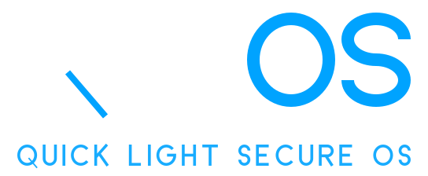

Linux
Established- Kernel
- Monolithic
- Access model
- Users, files, permission bits
- Drivers
- Mostly in the kernel
- Size
- Large, general purpose

A small capability microkernel written from scratch: its own bootloader, kernel, drivers and shell. No third-party code.
Small, safe, quick to start programs, light enough for the weakest IoT devices.
A handle is the only way to reach a kernel object. A task sees only what it was given; rights can only shrink, and a handle can be revoked or time-limited.
Programs start with spawn; the result arrives as one message. A task is stopped through its task handle. No fork, no wait.
Dispatcher, console, keyboard and disk are ring-3 tasks. Even device access (ports, memory, IRQ) is a capability.
Every step is closed by a test (host-side under ASan/UBSan, or in QEMU). make check64 guards the code for later ports.
The kernel keeps only memory, tasks, scheduling, interrupts, handles, channels and the loader. Everything else talks over channels.
See what it does and how it talks to the rest of the system.
The ideas are not new, and we say so. What differs is the size target, a from-scratch code base and an IoT-first focus.
No networking, no graphics, no SMP. v1.0.0 stays 32-bit x86.
Own bootloader, kernel, drivers and shell. No third-party code.
Every step is closed by a test, and the hardware table shows what did not work too.
Road to v1.0.0, six blocks.
Goals 1–46 from the task list, and what comes after v1.0.0. Done:
Read from the source tree by tools/gen_metrics.py.
What has actually been tested. Rows come from the real-machine checklist.
Boots through BIOS (int 0x13): needs legacy BIOS or UEFI with CSM. Pure UEFI is not supported.
A SATA disk in AHCI mode is invisible; session files live in RAM.
A USB-only keyboard without BIOS PS/2 emulation gives no input yet.
The physical memory manager uses the first 64 MB only.
Linux or Windows + WSL. Needs nasm, gcc -m32, make, qemu-system-i386, python3.
# build and run in QEMU
sudo apt install nasm build-essential \
gcc-multilib python3 qemu-system-x86
git clone https://github.com/qlsdev/QlsOS
cd QlsOS && make run
# first steps in the shell help # topics exec hello # ring-3 program dispatcher start sh # shell in ring 3
QlsOS is built from source for now. Prebuilt images will appear in GitHub Releases.
Clone the repository and run make run.
Legacy BIOS / CSM boot, PS/2 keyboard
GitHub Releases, one file per tag
Architecture contract, HAL design, hardware checklist and more, with search.
The code is open under MPL-2.0. Bug reports, hardware results and reviews are all welcome.
Before a change: make test and make check64.
Follow the hardware checklist and open an issue with your result row.
ARCHITECTURE.md lists the rules that never bend.
Mozilla Public License 2.0: changes to the files stay open.
Docs: ARCHITECTURE · PROJECT · HAL design · Hardware checklist
boot/ x86 bootloader (two stages, CRC-32 check) kernel/src/ common code: scheduler, handles, channels, heap, VFS kernel/hal/ hal.h — contract between common code and ports kernel/arch/x86/ everything x86-specific kernel/arch/arm/ everything ARM-specific user/ ring 3: dispatcher, services, shell, tests tests/ host tests + QEMU harness tools/ crc32, usb-write.sh